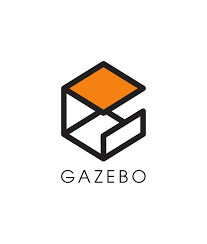
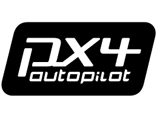
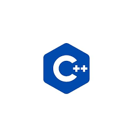

Methodology
Introduction
To investigate active localization and navigation in a multi-robot system, we designed and implemented a simulation-based framework using the Robot Operating System (ROS) Noetic and Gazebo 11 as the core middleware and simulation environment, respectively. The system consists of Unmanned Ground Vehicles (UGVs) and Unmanned Aerial Vehicles (UAVs), each simulated in separate virtual machines (VMs) and interfaced through a centralized SLAM architecture.
Simulation Environment and Robot Platforms
The UGV platform selected for this study was the TurtleBot3, a compact differential-drive robot widely used in academic robotics research. It was chosen primarily due to its built-in visual sensors, which are compatible with visual SLAM methods. The UAV platform was based on the PX4 flight stack, utilizing the Iris drone model equipped with depth cameras to enable three-dimensional environmental perception. PX4 was integrated with ROS through the MAVROS interface, allowing communication between the flight controller and the ROS-based SLAM system.
Centralized SLAM Architecture
Our solution follows a centralized SLAM paradigm, in which sensor data from multiple agents is transmitted to a central server responsible for constructing and maintaining a global map. This architecture allows for data fusion across heterogeneous platforms (UAVs and UGVs), enabling coordinated mapping and localization. The key benefit of a centralized SLAM approach is the consistency of the global map, which facilitates collaboration between robots. However, it introduces challenges in communication latency and requires robust synchronization mechanisms.System Configuration and Virtualization
Due to hardware constraints, the system was distributed across three virtual machines (VMs), each running Ubuntu 18.04 LTS. One VM simulated the UGVs, another simulated the UAVs, and a third functioned as the centralized SLAM server. This setup offered modularity and facilitated easier configuration of inter-process communication through virtual networks. We adopted this VM-based deployment due to its scalability and the ease of establishing isolated yet connected simulation environments under limited computational resources.Multi-Robot Communication Framework
To enable inter-VM communication across the distributed ROS environments, we utilized the fkie_multimaster package. This toolset allows multiple ROS masters to discover each other and share selected topics across machines, thus supporting a loosely coupled architecture suitable for our centralized SLAM framework. Despite its flexibility, we encountered performance limitations when attempting to run all three VMs simultaneously on the available hardware. As a result, SLAM development for UAVs and UGVs was conducted separately, and their outputs were later integrated offline.UGV SLAM
To achieve accurate robot localization in noisy environments, each robot employs an Extended Kalman Filter (EKF) to fuse data from onboard Inertial Measurement Units (IMU) and 2D LIDAR sensors. The EKF prediction step models motion dynamics using Jacobians and covariance matrices, assuming small time intervals (~1s) between updates. Linear accelerations and angular velocities from the IMU are used to predict the robot's new pose, while the update step incorporates LIDAR-based corrections. Pose estimates are used to transform sensor readings into the robot’s local coordinate frame. A local occupancy grid of size 60×60 cells (0.1m resolution) is constructed using Bresenham’s algorithm, with LIDAR beams marking free and occupied cells. This local map is updated at 1 Hz and published via the /local_map ROS topic for global merging.Due to the resource constraints and partial progress in developing a full SLAM pipeline, a hybrid approach was adopted for final validation. RTAB-Map, a graph-based SLAM method well-suited for RGB-D input, was applied to the UGV simulation to generate local maps. A custom ROS-based script was then developed to merge these local maps into a cohesive global map. This served as a proof of concept for the centralized map integration strategy envisioned for the full multi-robot system.
UAV slam
The aerial component of our system was simulated using PX4-based Iris drones within the Gazebo 11 environment. The UAVs were equipped with simulated Intel RealSense depth cameras to enable 3D perception. PX4 SITL (Software-In-The-Loop) was used to provide flight control, while MAVROS acted as a middleware to bridge PX4 with ROS Noetic. We deployed the UAV simulation in a dedicated Ubuntu 18.04 VM. To support scalable multi-drone simulation, each UAV instance was launched with a unique MAVROS namespace and TF prefix. Visual SLAM was implemented using RTAB-Map, leveraging the UAVs’ depth and odometry data to build 3D Octomaps. A consistent TF tree was enforced by disabling MAVROS’s default TF publisher and integrating a custom transform pipeline to align all frames (e.g., map, odom, base_link, camera_link) under a centralized SLAM coordinate system. Each UAV published data to a separate ROS namespace, allowing structured topic handling. Due to hardware limitations, the UAV SLAM was developed and tested separately from the UGV system. Each UAV’s local Octomap was generated on the central server, and subsequently merged into a unified 3D map. Map merging was based on known initial positions and odometry, avoiding the need for computationally expensive loop closure or global frame registration.A*-Based Hybrid Path Planning
The navigation strategy integrates global and local planning using a hybrid A* approach. A centralized planner assigns each robot a global goal based on the merged occupancy map, while the local planner operates within a 6×6m (60×60 cells) dynamic window. A* search is performed in this window using a Euclidean-distance heuristic. If the global goal is visible, a direct path is computed; otherwise, the planner selects the best edge cell that leads toward the goal, promoting continuous movement even under partial observability. Planning is recalculated at every timestep, enabling real-time reaction to local changes. The planner comprises modular sub-functions, including extract_local_map(), get_neighbors(), a_star(), and find_edge_local_goal(), all integrated in local_global_planner().DQN-Based Reinforcement Learning Navigation
To complement the rule-based A* planner, a Deep Q-Network (DQN) was developed for learning-based navigation. The model takes as input a 20×20 local occupancy grid and a 4D pose vector representing the robot’s position and goal coordinates. The grid input is processed via a convolutional layer (16 filters, 3×3 kernel, tanh activation) followed by max pooling and flattening. The pose vector passes through a fully connected layer with 32 ReLU units. The outputs are concatenated and fed into a dense layer with 128 ReLU units, with a final linear layer producing Q-values for four discrete actions: move forward, left, right, or stay. The model is trained using mean squared error (MSE) loss and the Adam optimizer with a learning rate of 1e-3. A target network is used to stabilize training, with weights periodically synchronized from the policy network. The reward function incentivizes reaching the goal, penalizes collisions and looping, and includes shaping based on heuristic progress toward the goal.
Our Technology stack
-
 Gazebo
-
ROS
-
 PX4
-
 Python
Python
-
 C++
-
XML